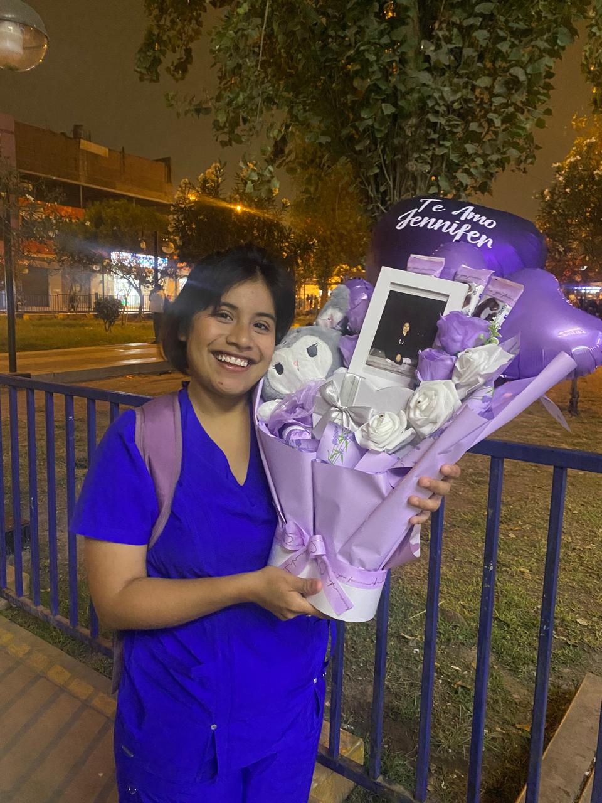
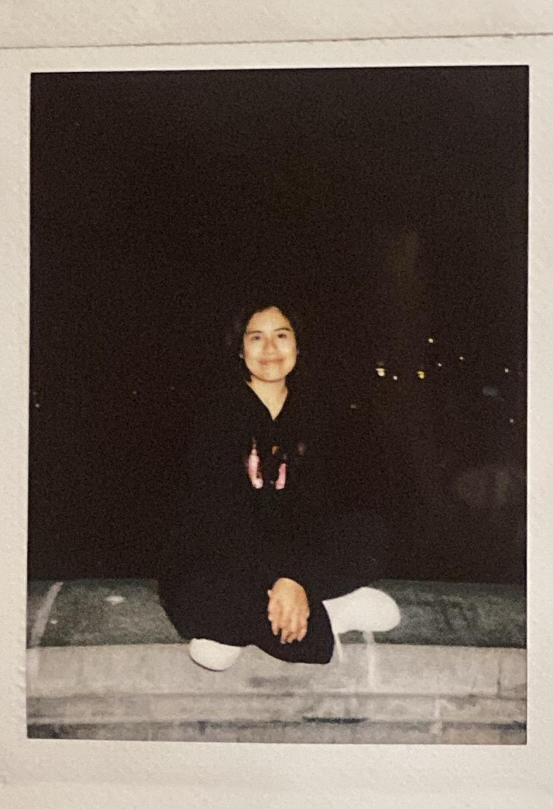
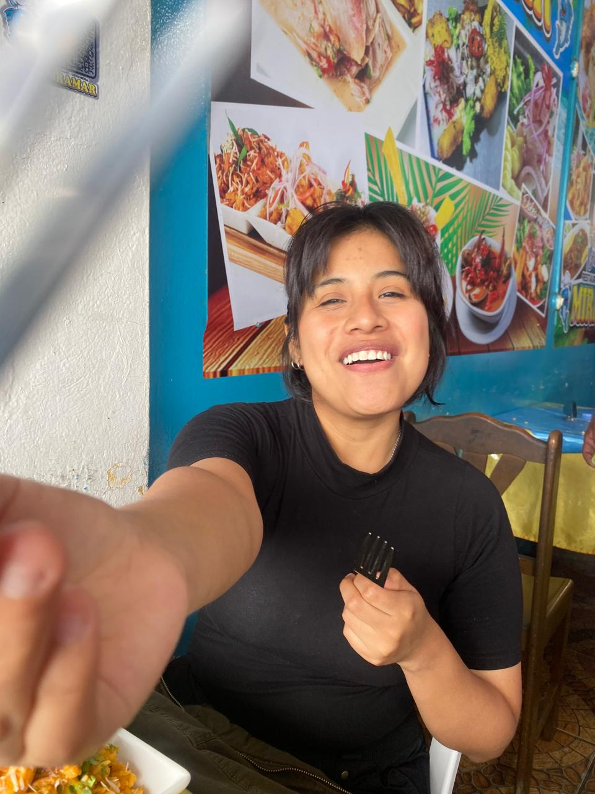

para mi fisioterapeuta favorita
Feliz Día Mundial de la Fisioterapia 💜
Ponte cómoda, sube el volumen…
y déjame decirte lo orgulloso que estoy de ti.
capítulo uno
Hoy quiero aprovechar este día para decirte algo que quizá no te digo todas las veces que debería:
Estoy muy orgulloso de ti.Orgulloso de la mujer que eres, de la profesional en la que te estás convirtiendo y de todo el esfuerzo que haces para conseguir cada una de tus metas.

capítulo dos
Sé que detrás de la palabra “fisioterapeuta” hay muchas horas de estudio, prácticas, cansancio, correcciones, responsabilidades, pacientes y momentos en los que probablemente has dudado de ti misma.
Pero también sé que detrás de todo eso hay una mujer con una enorme vocación y un corazón muy bonito.
Y eso es algo que admiro muchísimo de ti.capítulo tres
Para mí no eres solamente una fisioterapeuta.
Eres esa persona que algún día podrá ayudar a alguien a volver a caminar después de una dificultad, a recuperar un movimiento, a sentirse mejor, a recuperar confianza en su propio cuerpo y, de alguna manera, recuperar una parte de su vida.
Y creo que eso es algo realmente hermoso.Me encanta imaginarte creciendo profesionalmente, aprendiendo cada día más, descubriendo nuevas técnicas y convirtiéndote poco a poco en la gran profesional que sé que puedes llegar a ser.

capítulo cuatro
Y quiero que recuerdes algo: nunca voy a dejar de sentirme orgulloso de ti. No solamente cuando consigas tus metas.
capítulo cinco
Quiero verte cumplir tus sueños. Quiero verte conseguir ese título, alcanzar tus metas profesionales, aprender muchísimo y algún día mirar hacia atrás y decir:
“Todo el esfuerzo valió la pena.”Y cuando llegue ese momento, espero poder estar a tu lado sonriendo y diciéndote: “Yo siempre supe que podías hacerlo.”

capítulo seis
Sé que todavía te falta muchísimo por recorrer. Y quiero que sepas que, mientras la vida me permita estar a tu lado, quiero acompañarte en cada paso que des.
No para caminar por ti.Y para decirte, todas las veces que sea necesario: “Jenny, tú puedes.”
capítulo siete
El día de una profesión que se dedica a ayudar a las personas a recuperar movimiento, independencia y calidad de vida. Pero para mí también es un día para celebrar a la mujer que amo y admiro.
A esa Jeniffer que estudia, trabaja, se esfuerza, se preocupa, aprende, se equivoca, vuelve a intentarlo y sigue avanzando. A esa Jeniffer que quizá todavía no se da cuenta de todo lo que puede llegar a conseguir.
Yo sí lo veo.capítulo ocho
Para mí, eres la mejor fisioterapeuta del mundo. No porque seas perfecta.
Sino porque eres tú.Porque sé cuánto te importa lo que haces. Porque sé cuánto te esfuerzas. Y porque sé que cuando realmente quieres conseguir algo, das todo de ti.
feliz día, mi amor
Sigue creciendo. Sigue aprendiendo. Sigue persiguiendo tus sueños. Sigue siendo esa mujer increíble que admiro tanto.
Y recuerda que, en cada paso que des, en cada meta que alcances y en cada nuevo capítulo que comiences… quiero estar a tu lado.Con muchísimo orgullo, tu GersonDev
8 de septiembre · Día Mundial de la Fisioterapia
💜y una cosita más…
Si no empieza solo, toca ▶ 💜
de tu Gerson 💜